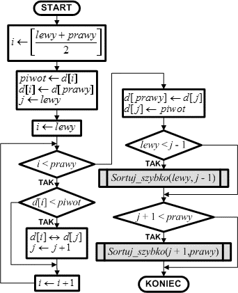

1. PWybierz element ze zbioru i oznacz go jako pivot (zwykle wybierany jest pierwszy, ostatni lub środkowy element).
2. Podziel zbiór na dwie części:
Elementy mniejsze niż pivot umieść po lewej stronie.
Elementy większe niż pivot umieść po prawej stronie.
3. Umieść pivot w odpowiednim miejscu – tak, aby wszystkie elementy po lewej były mniejsze, a po prawej większe.
4. Rekurencyjnie powtórz kroki 1-3 dla każdej z dwóch części zbioru (lewej i prawej).
5. Powtarzaj proces dzielenia, aż każda część zbioru będzie zawierać pojedyncze elementy lub będzie pusta.
6. Po zakończeniu rekursji scal wszystkie części, aby uzyskać posortowany zbiór.
7. Zakończ proces sortowania i wyeksportuj uporządkowany zbiór danych.
public class QuickSort {
public static void quicksort(int[] zbior, int lewy, int prawy) {
int i = lewy, j = prawy; -- (1)
int os = zbior[(lewy + prawy) / 2]; -- (2)
while (i <= j) {
while (zbior[i] < os)
i++;
while (zbior[j] > os)
j--;
if (i <= j) {
int temp = zbior[i];
zbior[i] = zbior[j];
zbior[j] = temp;
i++;
j--;
}
}
if (lewy < j) -- (3)
quicksort(zbior, lewy, j); -- (4)
if (i < prawy)
quicksort(zbior, i, prawy);
}
public static void main(String[] args) {
int[] zbior = {7, 2, 1, 6, 8, 5, 3, 4};
quicksort(zbior, 0, zbior.length - 1);
System.out.print("Posortowany zbior: ");
for (int i = 0; i < zbior.length; i++) {
System.out.print(zbior[i] + " ");
}
}
}
Schemat blokowy
